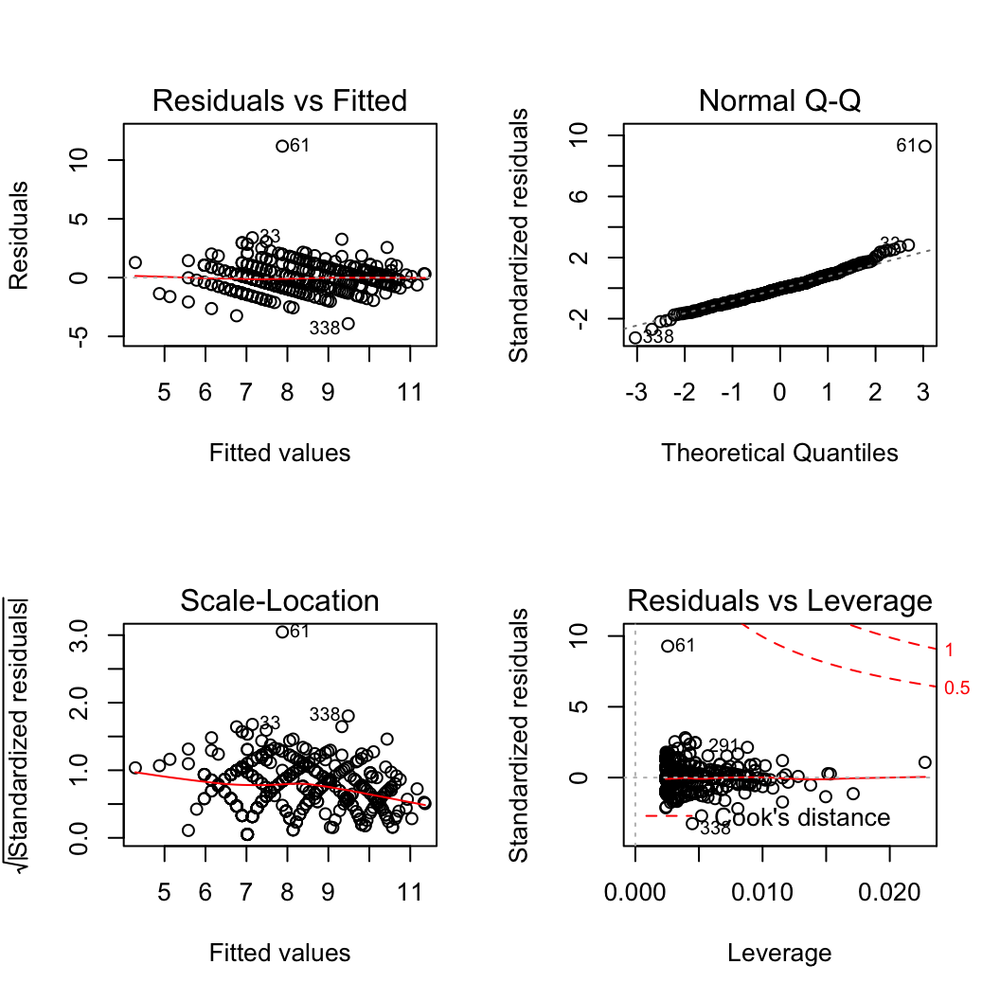
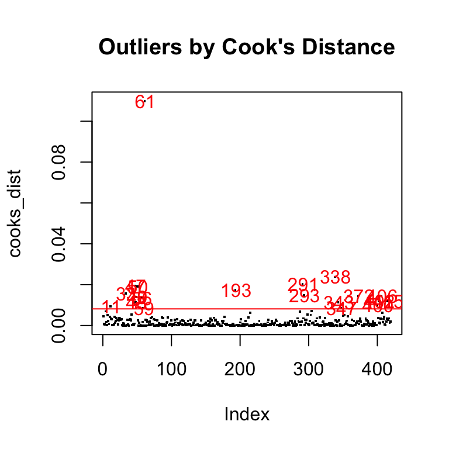

The allometree package enables you to develop and use allometric equations relating to the size and structure of urban trees. For example, these equations have been used to predict trunk diameter from tree age, as well as to predict tree height, crown height, crown diameter and leaf area from trunk diameter. They are foundational to other models that estimate the benefits and hazards associated with trees as they mature and grow in size. More information can be found in Song et al. (in prep).
This document demonstrates the workflow to develop these allometric models, taking the relationship between two size parameters as an example: Predicting tree height from trunk diameter.
Two linear modelling approaches will be introduced:
- Regression models developed separately for each species, i.e., single-species models
- Mixed-effects model that includes all species as random effects, i.e., mixed-effects model
Example data: urbantrees
We will be using data(urbantrees). It contains five species planted along streets in Singapore, each spanning a wide range of heights and diameter sizes (in metres).
data(urbantrees, package = "allometree") urbantrees #> # A tibble: 1,585 x 3 #> species diameter height #> <chr> <dbl> <int> #> 1 Hopea odorata 0.0987 4 #> 2 Hopea odorata 0.108 4 #> 3 Hopea odorata 0.111 4 #> 4 Xanthostemon chrysanthus 0.191 5 #> 5 Xanthostemon chrysanthus 0.150 5 #> 6 Xanthostemon chrysanthus 0.137 5 #> 7 Xanthostemon chrysanthus 0.207 5 #> 8 Xanthostemon chrysanthus 0.162 5 #> 9 Xanthostemon chrysanthus 0.134 5 #> 10 Xanthostemon chrysanthus 0.105 3 #> # … with 1,575 more rows library(ggplot2) ggplot(urbantrees, aes(diameter, height)) + facet_wrap(~ species, scales = "free") + geom_point()

Allometric equations: eqns_info
Allometric relationships for urban trees can vary drastically from those for forest trees, and are also influenced by human factors such as pruning and fertilisation. Empirical models are developed using six allometric equations used for urban trees (McPherson et al., 2016).
More information can be found in ?eqns_info, as well as in data(eqns_info). The column modelcode shows the unique model code for each equation:
data(eqns_info, package = "allometree") head(eqns_info) #> modeltype base_equation base_formula weights modelcode #> 1 Linear y = a + bx y ~ x lin_w1 #> 2 Linear y = a + bx y ~ x I(1/sqrt(x)) lin_w2 #> 3 Linear y = a + bx y ~ x I(1/x) lin_w3 #> 4 Linear y = a + bx y ~ x I(1/x^2) lin_w4 #> 5 Quadratic y = a + bx + x^2 y ~ x + I(x^2) quad_w1 #> 6 Quadratic y = a + bx + x^2 y ~ x + I(x^2) I(1/sqrt(x)) quad_w2
1. Single-species models
1.1. Model selection
For one species
For a particular species of interest, data will be fit to all allometric equations. The best-fit model is selected based on the lowest bias-corrected Aikaike’s information criterion (AICc) value. Here’s an example to select the best-fit model for the species Albizia saman, using the function sp_modelselect().
Alb_sam <- urbantrees[urbantrees$species == "Albizia saman", ] # subset data for one species results <- sp_modelselect(Alb_sam, response = "height", predictor = "diameter") # specify colnames of variables
The results variable is a list of 3 elements:
- Table showing models ranked by AICc value, named
all_models_rank. - Best-fit model object, named
best_model. - Table showing information on the best-fit model, named
best_model_info. More information on the output columns can be found at?sp_modelselect.
head(results$all_models_rank) #> df AICc model #> 1 3 591.9422 lin_w1 #> 2 4 593.0074 quad_w1 #> 3 5 593.4045 cub_w1 #> 4 6 594.0030 quart_w1 #> 5 3 594.0139 lin_w2 #> 6 5 595.5983 cub_w2
results$best_model #> #> Call: #> lm(formula = data[[response]] ~ data[[predictor]]) #> #> Coefficients: #> (Intercept) data[[predictor]] #> 6.717 9.464
results$best_model_info #> modelcode a b c d e response_geom_mean correctn_factor #> 1 lin_w1 6.717431 9.464096 NA NA NA 13.56608 1 #> predictor_min predictor_max residual_SE mean_SE adj_R2 n #> 1 0.3119437 1.527887 2.205 4.7889 0.4276 133
For multiple species
We can also run sp_modelselect() across multiple species in the full dataset urbantrees. For this, we use the wrapper function sp_modelselect_multi().
results_all <- sp_modelselect_multi(urbantrees, species = "species", # specify colname of species response = "height", predictor = "diameter")
The results_all variable is a list of 3 elements:
- List of tables showing each species’ candidate models ranked by AICc value, named
sp_models_rank. - List of each species’ best-fit model object, named
sp_models. - Table showing each species’ best-fit model information, named
sp_models_info.
An overview of the best-fit models across the 5 species:
results_all$sp_models_info #> species modelcode a b c d #> 1 Albizia saman lin_w1 6.717431 9.464096 NA NA #> 2 Hopea odorata quart_w4 -1.149669 149.317848 -1522.6122 7908.410 #> 3 Syzygium myrtifolium quart_w2 -4.614100 158.512849 -748.2492 1638.676 #> 4 Terminalia mantaly expo_w1 10.461310 29.320921 NA NA #> 5 Xanthostemon chrysanthus loglog_w1 15.955007 2.982932 NA NA #> e response_geom_mean correctn_factor predictor_min predictor_max #> 1 NA 13.566083 1.000000 0.31194369 1.5278875 #> 2 -14225.442 5.390829 1.000000 0.03183099 0.2928451 #> 3 -1321.221 7.735643 1.000000 0.04138029 0.5665916 #> 4 NA 7.596013 1.031243 0.03501409 0.5602254 #> 5 NA 5.067462 1.028603 0.02864789 0.3533240 #> residual_SE mean_SE adj_R2 n #> 1 2.2050 4.7889 0.4276 133 #> 2 11.9430 2.6339 0.5460 483 #> 3 2.1674 2.2536 0.6662 353 #> 4 1.8938 3.5502 0.6702 197 #> 5 1.2064 1.4484 0.5551 419
1.2. Outlier removal
Let’s say we want to check for outlier/influential data points, remove them, and re-fit the filtered dataset to the pre-selected models as defined in results_all$sp_models_info. First, lets visualise these outliers, say, for the species Xanthostemon chrysanthus.

There are numerous ways to deal with outliers. One way is to remove them based on Cook’s Distance (bottom-right plot). In general use, outliers may be defined as points with a Cook’s distance more than four times the mean Cook’s distance (red line in plot below). Note that this threshold is not fixed, and may be adjusted according to expert knowledge.
cooks_dist <- cooks.distance(results_all$sp_models$`Xanthostemon chrysanthus`) plot(cooks_dist, pch = ".", cex = 2, main = "Outliers by Cook's Distance") abline(h = 4*mean(cooks_dist, na.rm = T), col = "red") # threshold line text(x = 1:length(cooks_dist) + 1, y = cooks_dist, labels = ifelse(cooks_dist > 4 * mean(cooks_dist, na.rm=T), names(cooks_dist), ""), col = "red") # outlier labels

We can create a function uncooker() that removes outliers for each species in the dataset urbantrees, based on their respective best-fit models in results_all$sp_models:
uncooker <- function(data, modellist){ result <- data[0,] for(i in 1:length(modellist)){ # loop over all species cooks_dist <- cooks.distance(modellist[[i]]) outliers <- as.numeric(which(cooks_dist > 4*mean(cooks_dist, na.rm=T))) # row numbers subset <- data[(data$species == names(modellist[i])),][-outliers,] result <- rbind.data.frame(result, subset) } return(result) } # run the function uncooker() urbantrees_clean <- uncooker(urbantrees, results_all$sp_models) nrow(urbantrees_clean) #> [1] 1526
59 data points were removed to obtain the filtered dataset urbantrees_clean (n = 1526).
1.3. Re-fit filtered data
For one species
We can now fit urbantrees_clean to the best-fit equations we defined in Section 1.1. Here’s an example for the species Albizia saman again, using the function sp_modelfit().
This function has an additional argument modelcode. In the case of Albizia saman, it is lin_w1 (see results_all$sp_models_info). Note that you can also pick any one of the options found in eqns_info$modelcode.
We’ll overwrite our previously-defined variables, this time with the filtered dataset:
Alb_sam <- urbantrees_clean[urbantrees_clean$species == "Albizia saman", ] results <- sp_modelfit(Alb_sam, modelcode = "lin_w1", # specify modelcode response = "height", predictor = "diameter")
The new results variable is a list of 2 elements:
- Resulting model object, named
fitted_model. - Table showing information on the resulting model, named
fitted_model_info.
For multiple species
Similar to the the wrapper function sp_modelselect_multi(), we can also run sp_modelfit_multi() to fit pre-selected models across multiple species. In this function, we need to input a reference table ref_table (i.e. results_all$sp_models_info) that provides information on the species and their corresponding modelcode.
results_all <- sp_modelfit_multi(urbantrees_clean, ref_table = results_all$sp_models_info, species = "species", # colname in both data & ref_table modelcode = "modelcode", # colname in ref_table response = "height", predictor = "diameter")
The new results_all variable is a list of 2 elements:
- List of each species’ resulting model object, named
sp_models. - Table showing each species’ resulting model information, named
sp_models_info.
To make our subsequent code less verbose, let’s assign the elements sp_models and sp_models_info to variables with the same name:
sp_models <- results_all$sp_models sp_models_info <- results_all$sp_models_info
References
McPherson E. G., van Doorn N. S. & Peper P. J. (2016) Urban Tree Database and Allometric Equations. General Technical Report PSW-GTR-253, USDA Forest Service, 86.
Song, X. P., Lai, H. R., Wijedasa, L. S., Yee, A. T. K., Tan, P. Y., Richards, D. R., Streamlining management practices based on the size allometry of tropical street trees (in prep).